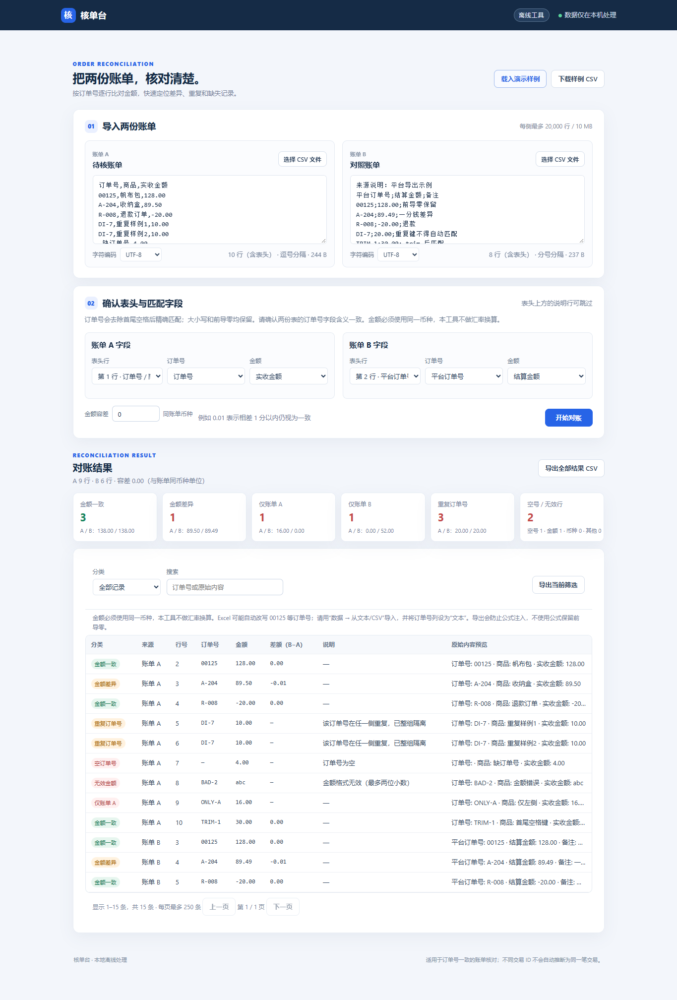
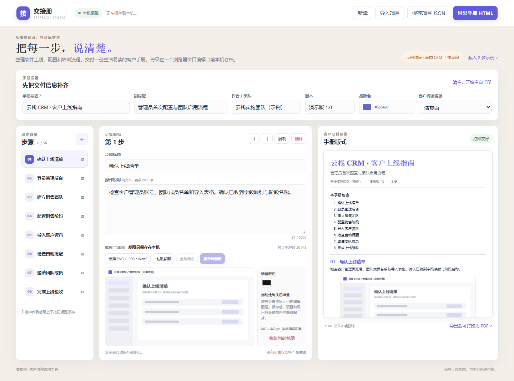
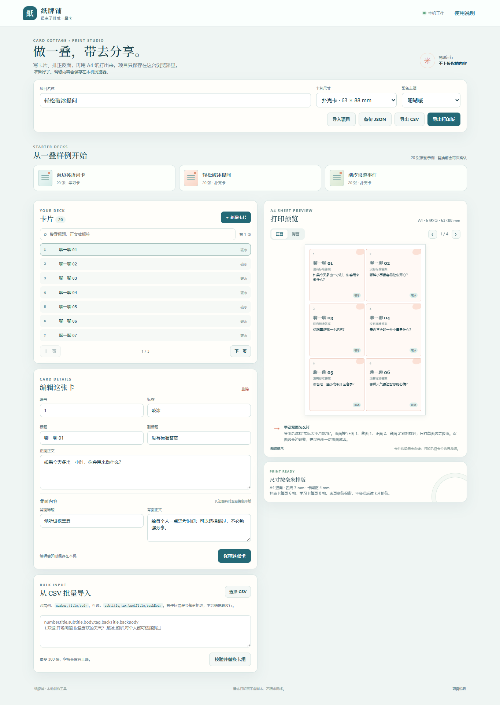
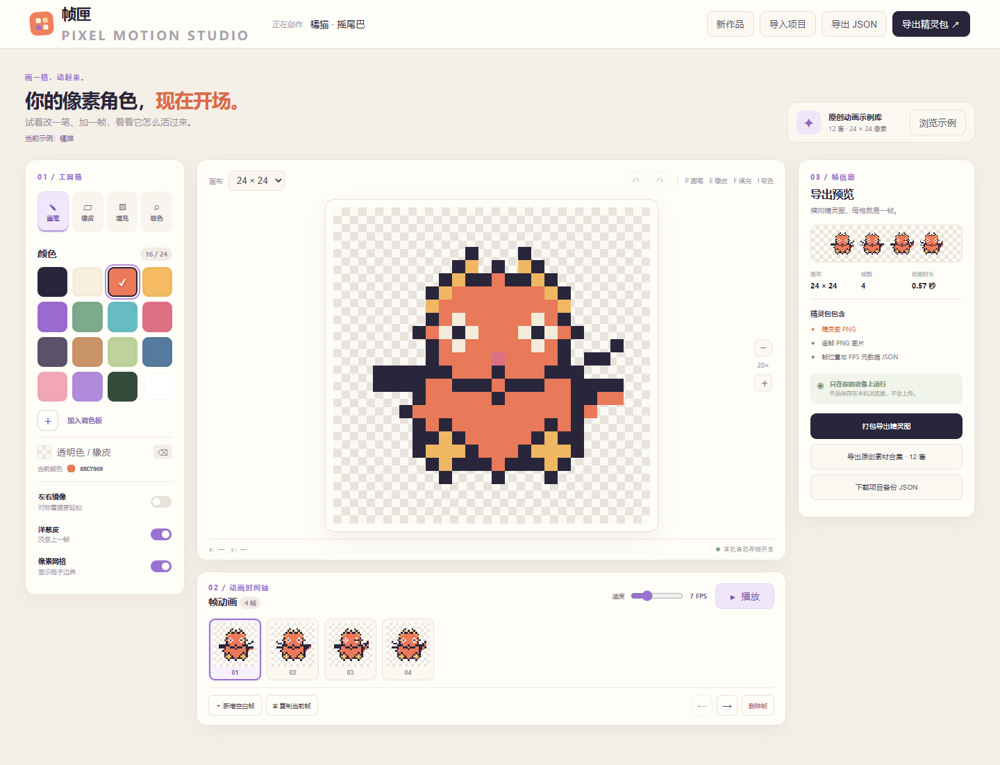
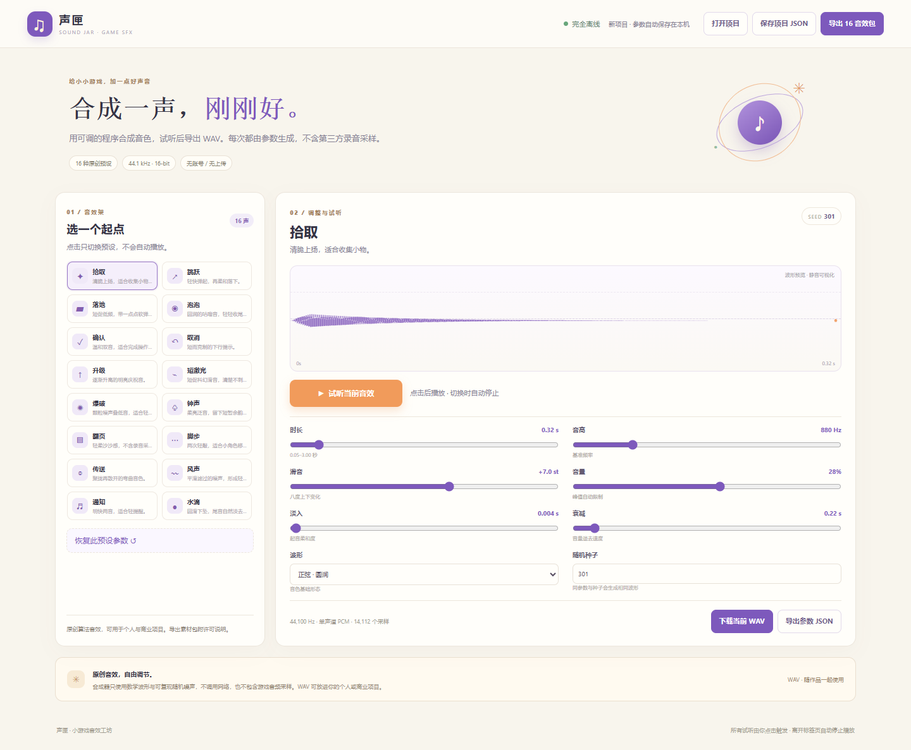

01小生意 · CSV
核单台
把两份 CSV 按订单号与金额逐行核对，集中查看金额差异、重复与缺失记录。不会连接支付平台，也不尝试推断不同交易号的关系。
本机处理CSV 对账无需账号
SMALL TOOLS, MADE WITH CARE
一组为小生意与轻创作准备的本地工具。少一些账号和流程，多一点清楚、可交付的结果。
SELECTED WORKS · 04
所有画面来自可运行的软件版本。作品介绍不代表销售页面或购买承诺。

把两份 CSV 按订单号与金额逐行核对，集中查看金额差异、重复与缺失记录。不会连接支付平台，也不尝试推断不同交易号的关系。

把软件上线、配置和培训流程整理成客户可读的步骤手册，支持为步骤配图并进行隐私遮盖，再导出静态 HTML 手册供客户查看和打印。

编辑学习卡、活动提问卡与桌游事件卡，再导出按 A4 排版的离线打印稿。打印方向、缩放和成品尺寸仍需先用实际设备校样。


一边逐帧绘制小动画，一边用可重复的波形参数生成短音。下面提供一只橘猫动画和三段音效作为免费样品，可直接试听与下载。
FREE SAMPLE ASSETS
素材按单独许可提供，可用于个人与商业作品；禁止将样品本身单独打包转售。细则见许可文件。
24 × 24 px · 四帧像素动画
44.1 kHz · 单声道 · 16-bit WAV
每次点击才播放。选另一段会先停掉当前声音；离开页面也会立即停止。
可以：把猫或音效放入你的游戏、动画、网站或客户项目，也可以修改后随完整作品发布。不可以：把这些原始或轻微修改的素材作为独立素材包再次出售或重新发布。完整条文：样品素材许可。
MORE EXPERIMENTS
以下为项目名与方向简介，不代表当前销售开放或完整公开源码。
一间离线专注陪伴室。
两只小船共用方向的逻辑谜题。
为截图打码、标注与讲解的工具。
报价和订单小工具的试作集合。
核对交付文件、版本差异与校验信息。
A SMALL INDEPENDENT STUDIO
这些作品由独立开发者制作，重点放在小团队也能直接上手的本地流程。页面与样品均可离线浏览，不收集付款资料，也没有购买或付款入口。
作品仍在整理和验证中。若将来开始销售，会在对应产品的交付范围、使用许可与支持方式确认后再开放。
作者的 GitHub 主页